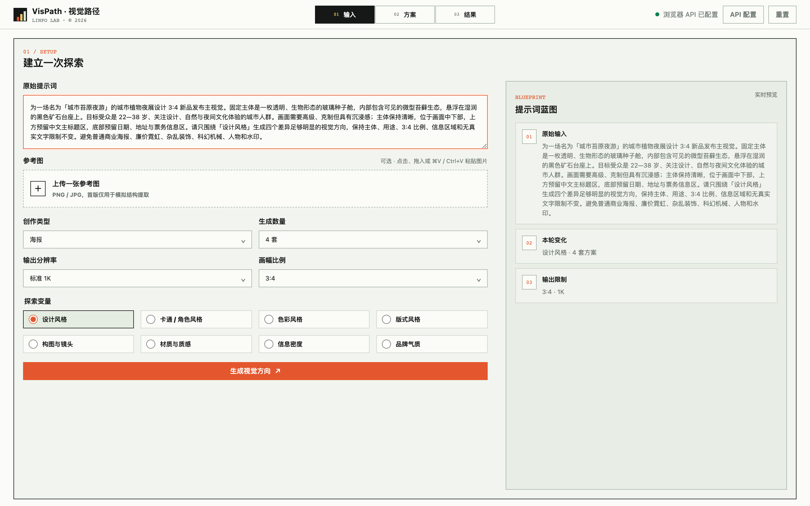
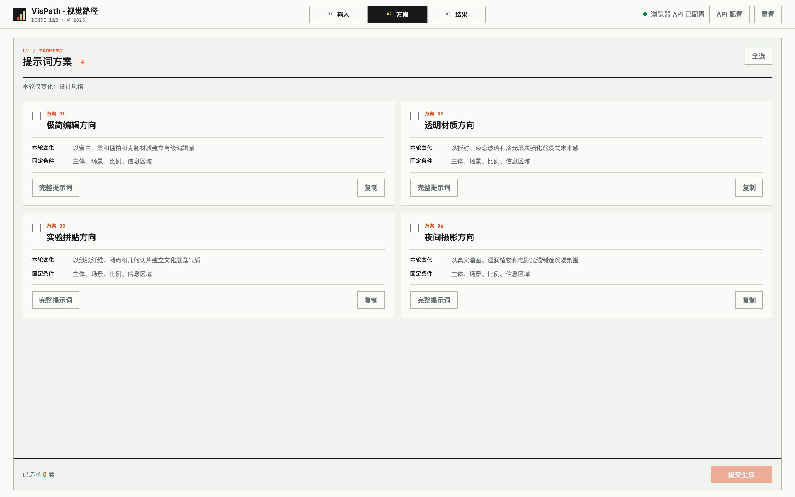
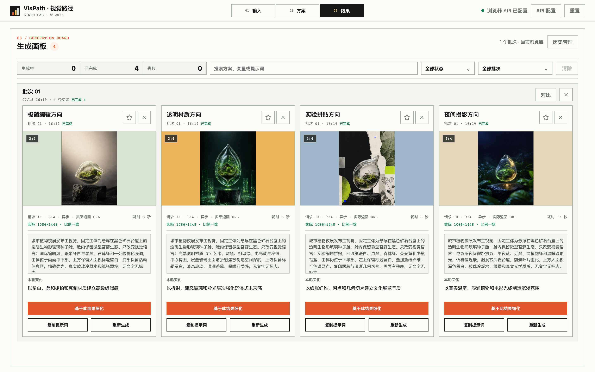
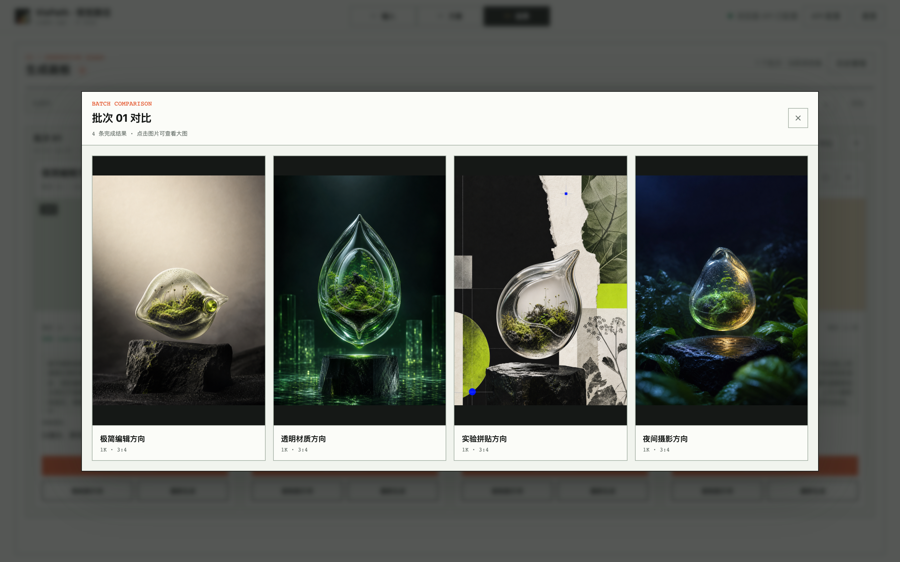

让 AI 视觉探索变得可控
以 VisPath 为例，把随机试图整理成固定约束、单变量探索、同批比较和方向细化的视觉工作流。
AI 生图把“得到一张图”的门槛降得很低，却没有自动解决视觉探索的问题。
同一段提示词里同时改变风格、构图、材质、光线和色彩，最后得到的每张图都有差异，却很难判断差异究竟来自哪里。下一轮继续修改时，上一轮的判断也很难被保留下来。设计师常常不是缺少灵感，而是缺少一个能比较、能追溯、能继续细化的探索过程。
我做 VisPath，是想验证一个更具体的问题：如果把创作约束固定下来，每次只改变一个视觉维度，AI 是否可以从“随机试图”变成“方向实验”？
这套方法不承诺模型始终生成理想结果，也不替设计师完成审美判断。它控制的是探索过程，让每次尝试都知道自己改变了什么，也知道下一步为什么继续。
VisPath 把一次视觉探索拆成六个动作：
- 输入：提交原始提示词或参考图，说明主体、场景和使用目的。
- 固定：锁定主体、场景、比例、信息区域和输出分辨率等创作约束。
- 变体：本轮只选择一个视觉变量，例如设计风格、材质质感或构图镜头。
- 方案：让 AI 根据固定条件生成多套结构化提示词方向。
- 比较：在同一批次查看真实结果、参数和提示词快照。
- 细化：选择值得继续的方向，沿着它再次生成，而不是重新开始盲试。
这六步不是为了把创作变成机械流程，而是给每一次视觉判断留下可回看的上下文。
一、视觉探索为什么容易失控
传统的 AI 生图尝试通常从一句较长的描述开始。设计师会不断增加形容词、替换参考图、调整比例，再根据结果继续修改。问题在于，多个变量经常被同时改变：画面风格变了，主体位置也变了；材质变了，光线和色彩也跟着变了。
这样得到的结果不能构成可靠比较。即使其中一张更接近目标，也很难说明它是因为哪一个判断成立。下一轮提示词往往是在上一轮的印象上继续堆叠，而不是沿着清楚的方向迭代。
所以，视觉探索的第一个问题不是“还能生成什么”，而是：这次生成与上次生成，到底只改变了什么？
可控不等于限制创意，而是让每一次变化都能被命名、被比较、被继续使用。
二、先固定创作约束，再选择本轮变量
VisPath 的输入阶段把原始提示词、参考图、创作类型、生成数量、输出分辨率和画面比例放在同一处确认。更重要的是，它把“固定条件”和“探索变量”分开处理。
以一张城市植物夜展的 3:4 发布主视觉为例，主体、场景、信息区域、比例和分辨率都可以先锁定。本轮只选择“设计风格”，而不是同时改变风格、构图和材质。
固定条件至少要回答这些问题：
- 画面中不能改变的主体是什么？
- 场景、用途和信息区域是否已经确定？
- 参考图、画面比例和输出尺寸是否需要保持一致？
- 哪些限制是业务或发布要求，不能被模型自由发挥？
探索变量则只回答一个问题：本轮要观察哪一个视觉判断？
界面中可以选择设计风格、卡通 / 角色风格、色彩风格、版式风格、构图与镜头、材质与质感、信息密度或品牌气质。选项很多，但一次只激活一个维度，其他条件继续保持不变。

固定条件的价值，是让不同结果拥有相同的比较基准。它不是把提示词写得更长，而是提前声明哪些内容不应在本轮漂移。
三、一次只改变一个视觉变量
单变量探索是 VisPath 最重要的工作约束。
如果本轮选择“设计风格”，AI 可以分别生成极简编辑方向、透明材质方向、实验拼贴方向和夜间摄影方向；主体、场景、比例和信息区域仍然保持一致。这样，设计师比较的是视觉语言的差异，而不是四组完全不同的画面。
如果下一轮要研究构图，就回到同一组固定条件，只切换到“构图与镜头”。如果要研究材质，则保持构图判断不变，单独观察玻璃、纸张、金属或其他材质如何影响画面。
这种做法带来两个实际好处：
- 判断更清楚：结果差异可以归因到一个明确维度，评审时更容易讨论“哪一种方向更接近目标”。
- 迭代更稳定：选中某个方向后，可以沿着它继续细化，不必把所有条件重新拼回提示词。
单变量不意味着每次只能生成一张图。它允许同一变量生成多套候选，让“变量比较”和“结果数量”分别承担不同职责。
四、先生成可检查的方案，再调用图片模型
VisPath 没有让图片模型直接从一段原始描述开始生图，而是先生成多套结构化的提示词方案。每套方案都要说明两件事：本轮改变了什么，以及哪些条件仍然固定。
这一步把“模型觉得可以怎么画”转换成了“设计师可以先检查哪些方向”。在真正调用图片接口前，设计师可以查看方案名称、变化说明和完整提示词，筛掉不符合目标或越过约束的方向。
同一组城市植物夜展条件下形成了四套候选：
- 极简编辑方向：以留白、柔和棚拍和克制材质建立高级编辑感。
- 透明材质方向：以折射、液态玻璃和冷光层次强化沉浸式未来感。
- 实验拼贴方向：以纸张纤维、网点和几何切片建立文化展览气质。
- 夜间摄影方向：以真实温室、湿润植物和电影光线制造沉浸氛围。
它们不一定都是最终答案，但每套方向都有名称、有变化依据，也保留了共同的固定条件。

这一步也明确了 AI 的职责边界：AI 可以扩展方向、组织提示词和说明变化，但是否符合品牌、用途和发布要求，仍然由设计师判断。
五、把同一批次的结果放在一起比较
真正调用图片接口后，VisPath 把结果按批次组织，而不是只保留一张“最好看”的图片。
结果画板会保留每个方向的真实图片、批次编号、完成状态、请求尺寸、实际返回尺寸、比例、提示词快照和继续细化入口。这样，设计师回看某一张图时，仍然知道它来自哪一次探索、使用了什么条件，以及它改变的是哪个变量。
批次记录还有一个作用：把失败或未完成的结果也纳入过程，而不是只展示成功截图。当前页面可以显示生成中、已完成和失败状态；实际的接口稳定性、异步任务恢复和远程图片有效期，仍需要在更大样本中继续验证。

六、比较的不是“哪张最好看”，而是哪条路径值得继续
同批次比较让四个方向处于相同视觉尺度下。设计师可以先看主体是否稳定，再看构图、材质、氛围和信息区域是否符合目标。
比较时我会先问：
- 固定主体是否在不同方向中保持清楚？
- 本轮变量是否真的形成了可辨识的差异？
- 画面是否仍然满足比例、用途和信息区域等硬约束？
- 哪些变化值得继续细化，哪些只是偶然的模型效果？
这不是让 AI 自动打分，而是让设计师在同一批结果里做更有依据的选择。对比窗口保留四张图片和方向名称，支持点击查看大图，适合快速判断一整批结果的关系。

七、沿选中的方向继续细化
选中方向后，下一步不是重新输入一段全新的提示词，而是沿着已经确认的变量继续推进。
例如，设计师选择了“透明材质方向”，可以继续研究玻璃的折射强度、冷光层次和主体内部的生态细节；选择“实验拼贴方向”，则可以继续调整纸张纤维、网点密度和几何切片的比例。
继续细化时仍然需要区分两件事：哪些判断已经被选中，哪些内容只是下一轮假设。结果画板里的“基于此结果细化”入口保留了上一次的上下文，减少重复输入，也让方向变化更容易追踪。
边界：“沿方向细化”不等于模型会自动保持身份一致。主体形态、细节和构图仍可能漂移，必要时要重新检查固定条件、参考图和输出限制。
AI 和设计师各自负责什么
在这套工作流里，AI 适合承担：
- 把原始描述整理成结构化的提示词蓝图
- 根据一个视觉变量扩展多个候选方向
- 生成完整提示词和变化说明
- 批量调用图片接口并记录返回状态
- 保存批次、参数和结果，帮助回看和继续细化
设计师仍然负责：
- 决定主体、用途、品牌和发布约束
- 判断本轮应该研究哪个变量
- 检查候选方向是否越过固定条件
- 比较结果是否真正服务目标，而不是只追求视觉刺激
- 决定哪个方向进入下一轮，以及哪些证据还不够
AI 可以扩大视觉搜索范围，但“哪个方向值得继续”仍然是设计判断，不是模型输出里的默认结论。
可以复用的检查清单
下一次使用 AI 做视觉探索时，可以先检查这六件事：
- 固定条件：主体、场景、用途、比例、信息区域和输出限制是否写清楚？
- 单一变量：本轮是否只改变一个视觉维度？
- 方案说明：每个方向是否明确写出“本轮变化”和“固定条件”？
- 同批比较：候选结果是否在同一批次、同一视觉尺度下查看？
- 过程证据：是否保留提示词、参数、状态和结果，而不是只保存最终图片？
- 继续细化：选中方向后，下一轮是否沿着同一上下文推进？
这套方法的适用边界
适合使用：视觉方向还不明确、需要探索多种风格、希望减少提示词盲试，或需要与客户、产品和团队共同比较视觉方案的项目。
不必完整使用：目标、风格和画面规则都已经确定，只需要完成低风险的局部执行时，可以直接使用固定提示词和必要的结果检查。
当前可以验证：复杂输入可以拆成固定条件与单一变量，多个提示词方向可以被选择、生成、比较和继续细化。
不能证明：第三方接口长期稳定、不同模型输出始终一致、某种方向一定更符合审美，也不能替代人工评审、品牌判断和真实发布验证。
对我来说，AI 视觉工作流的价值不在于让模型替我做决定，而在于让每一次探索都留下可检查的理由。固定什么、改变什么、比较什么、为什么继续，都可以被说清楚。